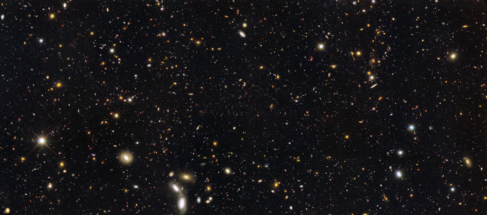

📅 05 de Octubre - Tu cumpleaños

📅 26 de Diciembre - El día que te dije me gustabas

📅 13 de Enero - Fuimos a ver Interestellar

📅 20 de Enero - Me diste el bloqueador

📅 24 de Enero - Saldaste tu deuda

📅 27 de Enero - Te di un beso

📅 3 de Febrero - Fuimos a ver La compañera perfecta

📅 10 de Febrero - Pasamos toda la tarde viendo Twilight

📅 17 de Febrero - Hoy